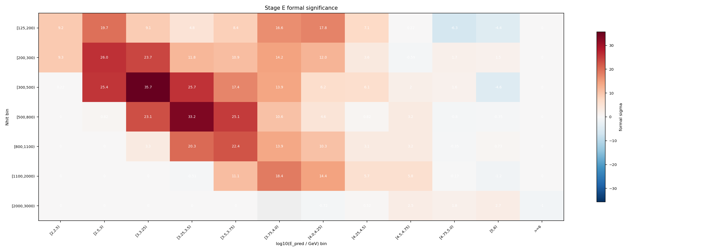
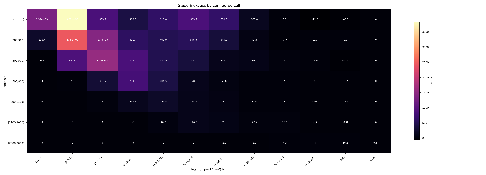
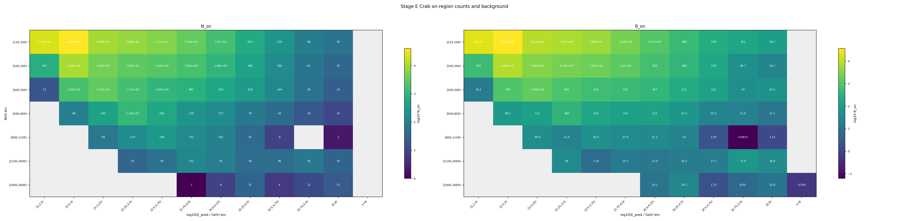
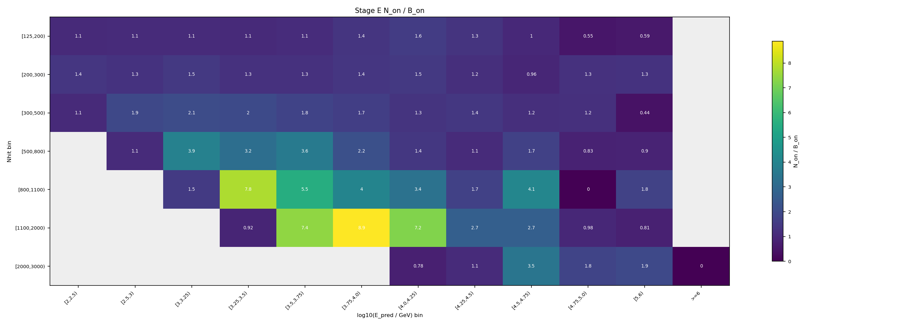
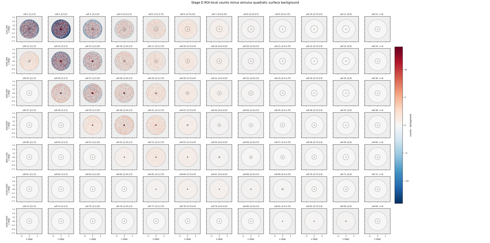
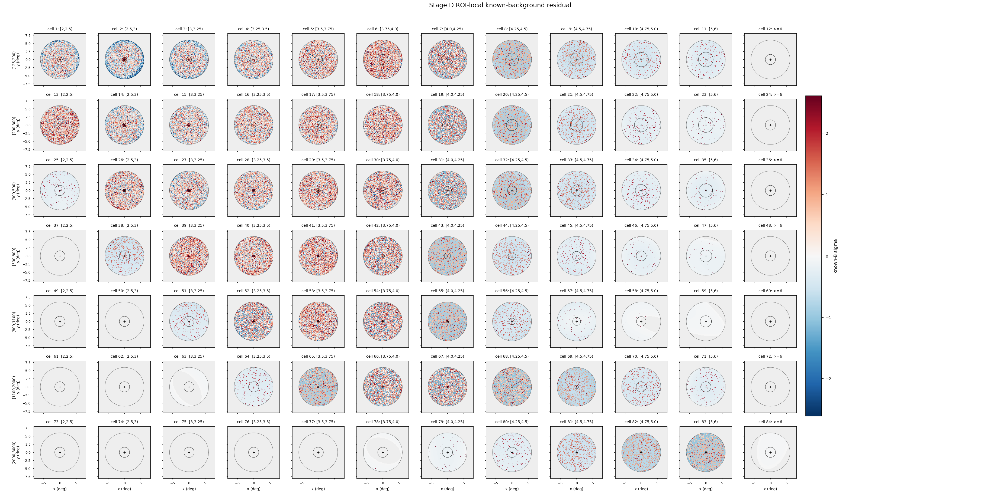
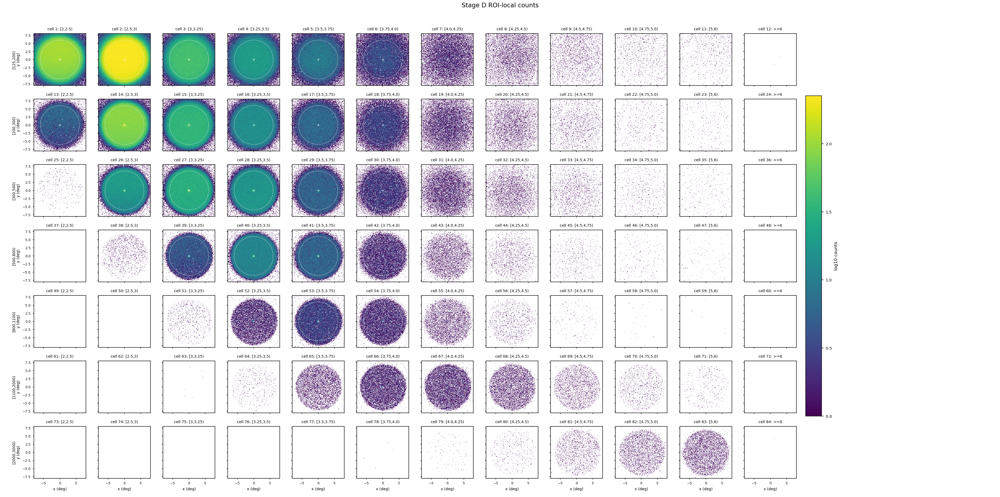
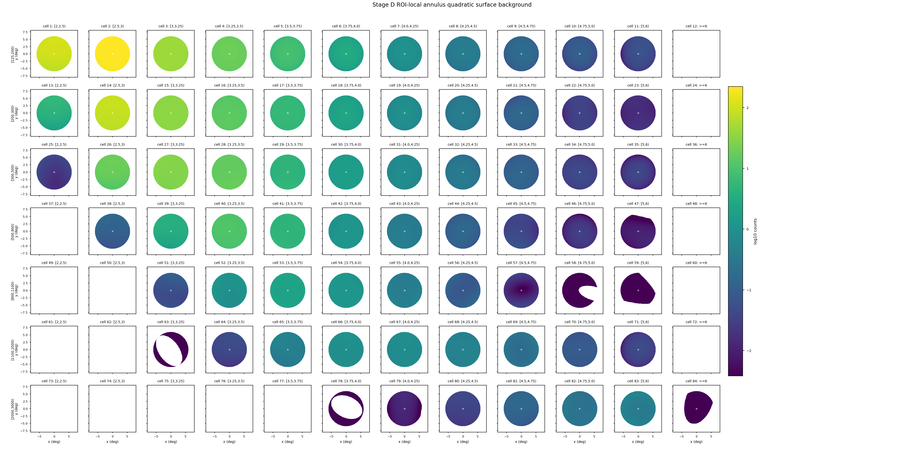

Stage E 信号提取报告
本页把 Stage E 的输出翻译成可读的分析说明：它不是在拟合能谱，而是在每个 (Nhit, log10 E_pred) cell 里统计 Crab 源区计数，并扣除 Stage D 给出的背景期望，得到后续 Stage F forward folding 拟合要使用的信号表。
一句话结论
Stage E 已经在 84 个传入 cell 上完成 Crab on-region 计数。总源区计数 N_on = 128,987，Stage D 背景期望 B_on = 107,235，因此总 excess 为 21,751.8，known-background 形式的总诊断显著性为 64.3494 sigma。质量门状态为 passed。
passed。
当前配置要求总 formal sigma 位于
[50, 250] 之间。本次结果为 64.3494，通过质量门，可以作为 Stage F 的输入候选。
为什么要做 Stage E
前面几个阶段各自只解决了问题的一部分：Stage A 给出 MC 响应矩阵，Stage B 给出每个 cell 的 PSF 和积分半径，Stage C 把观测 ROOT 规约成带 RA/Dec/MJD/cell_id 的 parquet，Stage D 估计每个 cell 在 Crab 孔径内应有多少背景。到这里还没有得到“Crab 在每个 cell 贡献了多少信号”。
Stage E 就是这个桥梁：它把观测到的源区计数 N_on 和背景期望 B_on 合成 excess。Stage F 不直接拿所有事件拟合，而是拿 Stage E 产出的逐 cell excess 表，和 Stage A 响应折叠出来的模型预期数做比较。
Stage E 在做什么
ra_mean_deg、dec_mean_deg、cell_id。r_opt_deg，即约 1.58 sigma 的最优积分半径。r_opt，计入 N_on,b。B_on,b，计算 excess_b = N_on,b - B_on,b。本次 Stage D 使用的是 Crab 局部 ROI 背景模型，所以 Stage E 也只在同一套 fiducial ROI 内工作：rho < 6 deg。这保证 N_on 的统计口径和 B_on 的背景口径一致。
具体怎么做的
1. 事件选择和几何
- 源位置固定为 Crab：
RA = 83.63 deg，Dec = 22.01 deg。 - 先按 Stage D 的局部 ROI 约束保留
rho < 6 deg的事件；本次保留7,374,765行，剔除20,983,580行。 - 随后用球面角距离公式计算事件与 Crab 的夹角
sep，每个 cell 判断sep <= r_opt_deg[cell]。
2. 背景和统计量
Stage D 输出的是 direct_expectation，也就是直接背景期望 B_on。它不是传统 off 区计数，因此本报告不把 B_on 强行拆成 alpha × N_off，表格里的 Li-Ma 显示为 n/a。
excess_b = N_on,b - B_on,b- conservative 误差口径：
sqrt(N_on,b + B_on,b) - 本次 formal sigma：
Poisson known-background aggregate diagnostic - known-background 诊断公式：
sign(N_on-B_on) * sqrt(2 * (N_on ln(N_on/B_on) - (N_on-B_on)))
alpha。本次 Stage D 给的是直接背景期望，不是 off 区事件数，所以 Li-Ma 在数学上不适用。这里的显著性是一个诊断量，用来检查信号是否合理；最终能谱结果仍要看 Stage F 之后的拟合和系统误差检查。
结果怎么读
下表每一行是一个输入 cell。Nhit bin 表示 shower size 分箱，log10 E_pred bin 是 ML 预测能量分箱。低 Nhit、低预测能量 cell 统计量最大；高 Nhit、高预测能量 cell 背景很低，但如果仍有明显 positive excess，就对高能端谱形很有价值。
| cell | Nhit bin | log10 E_pred bin | r_opt deg | N_on | B_on | excess | stat err | known-B sigma | Li-Ma |
|---|---|---|---|---|---|---|---|---|---|
| 1 | [125,200) | [2,2.5) | 0.7816 | 21,284 | 19,968.9 | 1,315.14 | 145.89 | 9.2072 | n/a |
| 2 | [125,200) | [2.5,3) | 0.7211 | 40,293 | 36,471.6 | 3,821.43 | 200.73 | 19.675 | n/a |
| 3 | [125,200) | [3,3.25) | 0.7878 | 9,462 | 8,608.26 | 853.737 | 97.273 | 9.0555 | n/a |
| 4 | [125,200) | [3.25,3.5) | 1.063 | 7,577 | 7,164.28 | 412.724 | 87.046 | 4.8304 | n/a |
| 5 | [125,200) | [3.5,3.75) | 1.34 | 5,697 | 5,085.15 | 611.845 | 75.478 | 8.4161 | n/a |
| 6 | [125,200) | [3.75,4.0) | 1.555 | 3,290 | 2,426.28 | 863.718 | 57.359 | 16.624 | n/a |
| 7 | [125,200) | [4.0,4.25) | 1.779 | 1,697 | 1,065.5 | 631.498 | 41.195 | 17.794 | n/a |
| 8 | [125,200) | [4.25,4.5) | 1.975 | 653 | 488.017 | 164.983 | 25.554 | 7.0976 | n/a |
| 9 | [125,200) | [4.5,4.75) | 2.043 | 239 | 235.68 | 3.32021 | 15.46 | 0.21577 | n/a |
| 10 | [125,200) | [4.75,5.0) | 2.217 | 88 | 160.874 | -72.8739 | 9.3808 | -6.2905 | n/a |
| 11 | [125,200) | [5,6) | 2.265 | 59 | 99.2848 | -40.2848 | 7.6811 | -4.3767 | n/a |
| 12 | [125,200) | >=6 | 1.58 | 0 | 0 | 0 | 0 | 0 | n/a |
| 13 | [200,300) | [2,2.5) | 0.6386 | 792 | 558.612 | 233.388 | 28.142 | 9.2848 | n/a |
| 14 | [200,300) | [2.5,3) | 0.5542 | 10,510 | 8,063.05 | 2,446.95 | 102.52 | 26.022 | n/a |
| 15 | [200,300) | [3,3.25) | 0.5469 | 4,457 | 3,054.24 | 1,402.76 | 66.761 | 23.738 | n/a |
| 16 | [200,300) | [3.25,3.5) | 0.7287 | 2,918 | 2,326.63 | 591.37 | 54.019 | 11.789 | n/a |
| 17 | [200,300) | [3.5,3.75) | 1.033 | 2,441 | 1,941.09 | 499.915 | 49.406 | 10.906 | n/a |
| 18 | [200,300) | [3.75,4.0) | 1.301 | 1,846 | 1,299.72 | 546.281 | 42.965 | 14.243 | n/a |
| 19 | [200,300) | [4.0,4.25) | 1.526 | 1,065 | 720.024 | 344.976 | 32.634 | 11.993 | n/a |
| 20 | [200,300) | [4.25,4.5) | 1.747 | 460 | 387.721 | 72.2793 | 21.448 | 3.5647 | n/a |
| 21 | [200,300) | [4.5,4.75) | 1.904 | 168 | 175.712 | -7.71197 | 12.961 | -0.58612 | n/a |
| 22 | [200,300) | [4.75,5.0) | 2.112 | 61 | 48.722 | 12.278 | 7.8102 | 1.6919 | n/a |
| 23 | [200,300) | [5,6) | 2.274 | 35 | 26.655 | 8.34504 | 5.9161 | 1.5414 | n/a |
| 24 | [200,300) | >=6 | 1.58 | 0 | 0 | 0 | 0 | 0 | n/a |
| 25 | [300,500) | [2,2.5) | 1.58 | 17 | 16.0954 | 0.904554 | 4.1231 | 0.2234 | n/a |
| 26 | [300,500) | [2.5,3) | 0.4214 | 1,834 | 949.571 | 884.429 | 42.825 | 25.408 | n/a |
| 27 | [300,500) | [3,3.25) | 0.3961 | 3,067 | 1,490.25 | 1,576.75 | 55.381 | 35.69 | n/a |
| 28 | [300,500) | [3.25,3.5) | 0.4156 | 1,706 | 851.558 | 854.442 | 41.304 | 25.728 | n/a |
| 29 | [300,500) | [3.5,3.75) | 0.6477 | 1,088 | 610.084 | 477.916 | 32.985 | 17.406 | n/a |
| 30 | [300,500) | [3.75,4.0) | 0.9901 | 891 | 536.947 | 354.053 | 29.85 | 13.942 | n/a |
| 31 | [300,500) | [4.0,4.25) | 1.254 | 538 | 406.916 | 131.084 | 23.195 | 6.1893 | n/a |
| 32 | [300,500) | [4.25,4.5) | 1.446 | 319 | 222.442 | 96.558 | 17.861 | 6.0744 | n/a |
| 33 | [300,500) | [4.5,4.75) | 1.647 | 144 | 120.893 | 23.1067 | 12 | 2.0394 | n/a |
| 34 | [300,500) | [4.75,5.0) | 1.828 | 58 | 46.9626 | 11.0374 | 7.6158 | 1.553 | n/a |
| 35 | [300,500) | [5,6) | 2.086 | 24 | 54.3097 | -30.3097 | 4.899 | -4.6282 | n/a |
| 36 | [300,500) | >=6 | 1.58 | 0 | 0 | 0 | 0 | 0 | n/a |
| 37 | [500,800) | [2,2.5) | 1.58 | 0 | 0 | 0 | 0 | 0 | n/a |
| 38 | [500,800) | [2.5,3) | 1.58 | 96 | 88.2146 | 7.78541 | 9.798 | 0.81715 | n/a |
| 39 | [500,800) | [3,3.25) | 0.3108 | 432 | 110.51 | 321.49 | 20.785 | 23.128 | n/a |
| 40 | [500,800) | [3.25,3.5) | 0.3108 | 1,155 | 360.088 | 794.912 | 33.985 | 33.204 | n/a |
| 41 | [500,800) | [3.5,3.75) | 0.3253 | 559 | 154.496 | 404.504 | 23.643 | 25.074 | n/a |
| 42 | [500,800) | [3.75,4.0) | 0.5331 | 238 | 109.835 | 128.165 | 15.427 | 10.572 | n/a |
| 43 | [500,800) | [4.0,4.25) | 0.9741 | 175 | 121.185 | 53.8146 | 13.229 | 4.5808 | n/a |
| 44 | [500,800) | [4.25,4.5) | 1.183 | 74 | 67.1407 | 6.85932 | 8.6023 | 0.82344 | n/a |
| 45 | [500,800) | [4.5,4.75) | 1.399 | 43 | 25.1535 | 17.8465 | 6.5574 | 3.2281 | n/a |
| 46 | [500,800) | [4.75,5.0) | 1.549 | 18 | 21.5988 | -3.59878 | 4.2426 | -0.79751 | n/a |
| 47 | [500,800) | [5,6) | 1.861 | 10 | 11.161 | -1.16096 | 3.1623 | -0.35381 | n/a |
| 48 | [500,800) | >=6 | 1.58 | 0 | 0 | 0 | 0 | 0 | n/a |
| 49 | [800,1100) | [2,2.5) | 1.58 | 0 | 0 | 0 | 0 | 0 | n/a |
| 50 | [800,1100) | [2.5,3) | 1.58 | 0 | 0 | 0 | 0 | 0 | n/a |
| 51 | [800,1100) | [3,3.25) | 1.58 | 68 | 44.5621 | 23.4379 | 8.2462 | 3.2559 | n/a |
| 52 | [800,1100) | [3.25,3.5) | 0.2738 | 174 | 22.3765 | 151.624 | 13.191 | 20.261 | n/a |
| 53 | [800,1100) | [3.5,3.75) | 0.2622 | 280 | 50.4603 | 229.54 | 16.733 | 22.373 | n/a |
| 54 | [800,1100) | [3.75,4.0) | 0.2969 | 152 | 37.8996 | 114.1 | 12.329 | 13.93 | n/a |
| 55 | [800,1100) | [4.0,4.25) | 0.5141 | 105 | 31.3202 | 73.6798 | 10.247 | 10.328 | n/a |
| 56 | [800,1100) | [4.25,4.5) | 0.9862 | 41 | 24.0165 | 16.9835 | 6.4031 | 3.1447 | n/a |
| 57 | [800,1100) | [4.5,4.75) | 1.234 | 8 | 1.96915 | 6.03085 | 2.8284 | 3.2199 | n/a |
| 58 | [800,1100) | [4.75,5.0) | 1.471 | 0 | 0.0614823 | -0.0614823 | 0 | -0.35066 | n/a |
| 59 | [800,1100) | [5,6) | 1.753 | 2 | 1.13979 | 0.860214 | 1.4142 | 0.72719 | n/a |
| 60 | [800,1100) | >=6 | 1.58 | 0 | 0 | 0 | 0 | 0 | n/a |
| 61 | [1100,2000) | [2,2.5) | 1.58 | 0 | 0 | 0 | 0 | 0 | n/a |
| 62 | [1100,2000) | [2.5,3) | 1.58 | 0 | 0 | 0 | 0 | 0 | n/a |
| 63 | [1100,2000) | [3,3.25) | 1.58 | 0 | 0 | 0 | 0 | 0 | n/a |
| 64 | [1100,2000) | [3.25,3.5) | 1.58 | 33 | 36.0342 | -3.03418 | 5.7446 | -0.51281 | n/a |
| 65 | [1100,2000) | [3.5,3.75) | 0.2223 | 54 | 7.28742 | 46.7126 | 7.3485 | 11.085 | n/a |
| 66 | [1100,2000) | [3.75,4.0) | 0.2172 | 131 | 14.7485 | 116.251 | 11.446 | 18.431 | n/a |
| 67 | [1100,2000) | [4.0,4.25) | 0.2324 | 93 | 12.8907 | 80.1093 | 9.6437 | 14.399 | n/a |
| 68 | [1100,2000) | [4.25,4.5) | 0.2924 | 44 | 16.2862 | 27.7138 | 6.6332 | 5.6598 | n/a |
| 69 | [1100,2000) | [4.5,4.75) | 0.5587 | 46 | 17.1266 | 28.8734 | 6.7823 | 5.7576 | n/a |
| 70 | [1100,2000) | [4.75,5.0) | 1.58 | 70 | 71.4016 | -1.40161 | 8.3666 | -0.16642 | n/a |
| 71 | [1100,2000) | [5,6) | 1.58 | 30 | 36.8345 | -6.83449 | 5.4772 | -1.1639 | n/a |
| 72 | [1100,2000) | >=6 | 1.58 | 0 | 0 | 0 | 0 | 0 | n/a |
| 73 | [2000,3000) | [2,2.5) | 1.58 | 0 | 0 | 0 | 0 | 0 | n/a |
| 74 | [2000,3000) | [2.5,3) | 1.58 | 0 | 0 | 0 | 0 | 0 | n/a |
| 75 | [2000,3000) | [3,3.25) | 1.58 | 0 | 0 | 0 | 0 | 0 | n/a |
| 76 | [2000,3000) | [3.25,3.5) | 1.58 | 0 | 0 | 0 | 0 | 0 | n/a |
| 77 | [2000,3000) | [3.5,3.75) | 1.58 | 0 | 0 | 0 | 0 | 0 | n/a |
| 78 | [2000,3000) | [3.75,4.0) | 1.58 | 1 | 0 | 1 | 1 | n/a | n/a |
| 79 | [2000,3000) | [4.0,4.25) | 1.58 | 8 | 10.2238 | -2.22378 | 2.8284 | -0.7233 | n/a |
| 80 | [2000,3000) | [4.25,4.5) | 1.58 | 31 | 28.1763 | 2.82367 | 5.5678 | 0.52342 | n/a |
| 81 | [2000,3000) | [4.5,4.75) | 0.2024 | 6 | 1.73187 | 4.26813 | 2.4495 | 2.5248 | n/a |
| 82 | [2000,3000) | [4.75,5.0) | 0.256 | 11 | 6.02216 | 4.97784 | 3.3166 | 1.8161 | n/a |
| 83 | [2000,3000) | [5,6) | 0.3034 | 21 | 10.7858 | 10.2142 | 4.5826 | 2.7488 | n/a |
| 84 | [2000,3000) | >=6 | 1.58 | 0 | 0.535869 | -0.535869 | 0 | -1.0352 | n/a |
例如 cell 1 和 cell 2 贡献了最多的绝对 excess；而 cell 16、17 这类高 Nhit cell 虽然计数少，但背景更低，known-B 诊断显著性仍然很强。整体上，正 excess 沿着高 Nhit 对应高 log10 E_pred 的物理带出现，这是我们希望看到的结构。
诊断图怎么看




和 Stage D 正式去背景天图的关系
下面几张图来自 Stage D 正式 ROI-local 背景输出，不再使用此前平滑 skymap 的 sideband 近似。它们直接读取 background_v3_candidate_psfborrow.npz 中的 counts_map 和 background_map：去背景天图是逐像素 counts_map - background_map，residual 天图是同一背景期望下的 Poisson 诊断量。
B_on 是把同一个 Stage D background_map 积分到每个 cell 的 Crab on-region 后得到的；这里的天图只是把同一个过程摊回 ROI 像素上，方便人眼检查源形态。




输出文件和下一步
/mnt/mydisk/server/projects/energy_reconstruction/apply/output/stage_e_v3_candidate_psfborrow/runs/v3_stage_e_psfborrow_slurm_42029/signal_v3_candidate_psfborrow.npz：Stage F 直接读取的数组，包含N_on、B_on、excess、误差和显著性。/mnt/mydisk/server/projects/energy_reconstruction/apply/output/stage_e_v3_candidate_psfborrow/runs/v3_stage_e_psfborrow_slurm_42029/signal_v3_candidate_psfborrow_summary.csv：逐 cell 表格，适合人工检查和快速画图。/mnt/mydisk/server/projects/energy_reconstruction/apply/output/stage_e_v3_candidate_psfborrow/runs/v3_stage_e_psfborrow_slurm_42029/signal_v3_candidate_psfborrow_metadata.json：输入路径、Stage D 合约、ROI 口径、统计公式和质量门信息。/mnt/mydisk/server/projects/energy_reconstruction/apply/output/stage_e_v3_candidate_psfborrow/runs/v3_stage_e_psfborrow_slurm_42029/*.png：二维 cell 诊断图。
excess_b 比较，拟合幂律或 log-parabola 谱参数。